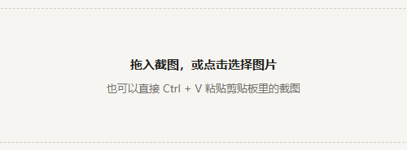
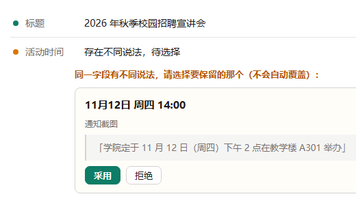
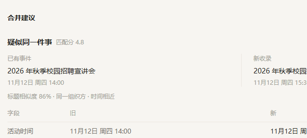
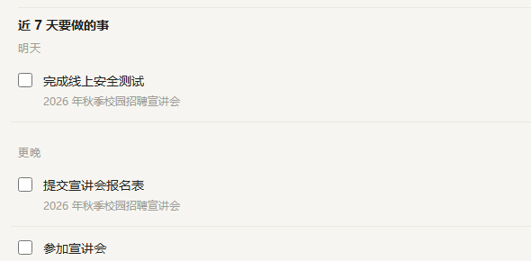
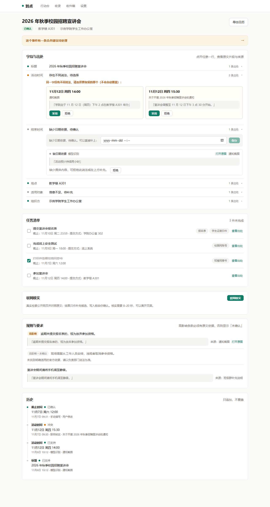
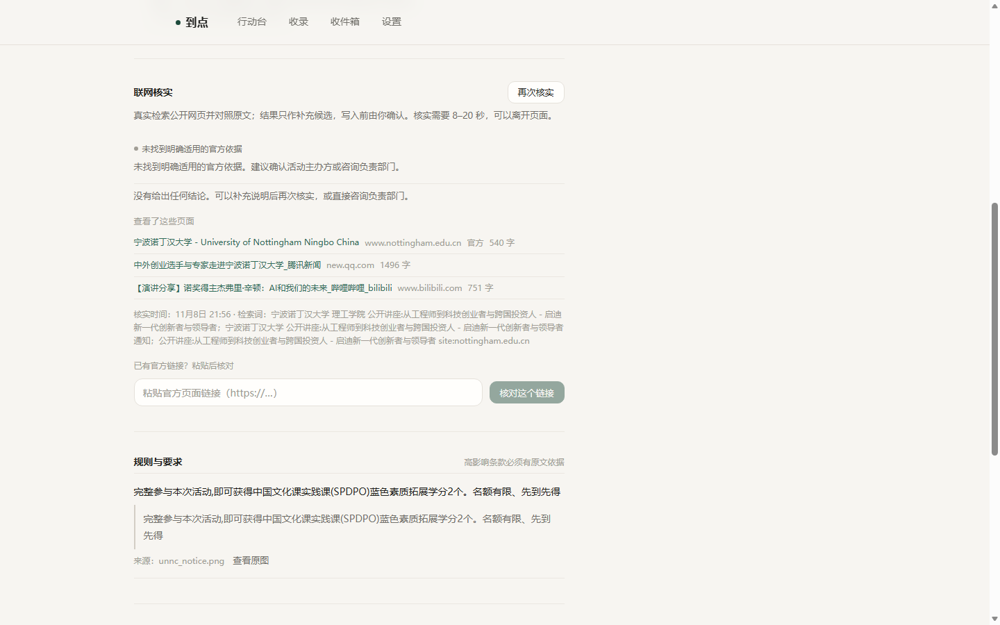
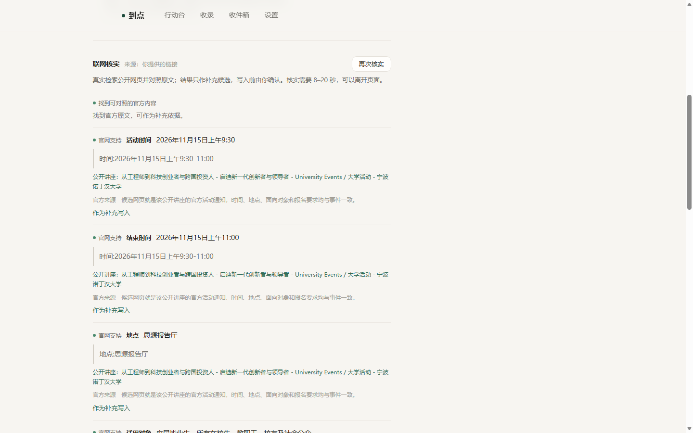
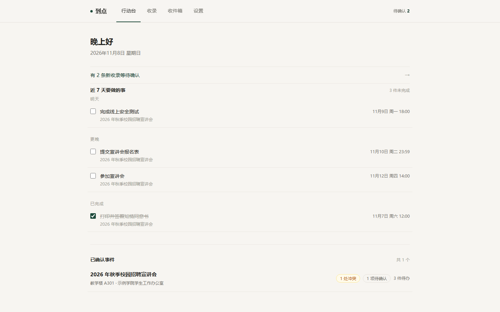

STEP 1上传 / 粘贴

官网、邮件、聊天截图，汇成有据可查的行动清单
发在网页上，刷过去就找不到了
搬运会抄错
存进相册，沉在几百张图下面
翻不到、对不上
各人记各的日历，口径不一致
变更没人追
每一份都要靠人搬：搬运会错、口径会打架、变更没人追。
图在，原文的上下文不在
没有依据
转写靠手，错一个数字没人知道
没有冲突提示
只提醒开始时间，不带出处
变更会漏
三个动作都做了，真到用时还是一句：「到底几点？在哪？要交什么？」




每一步人都看得见、说了算；识别与核实是真实模型与检索调用，结论以原文出处为准。活动内容为演示数据。
原文片段随身
每个字段挂着出处引文，模型不能凭空编造。
点击即定位
点开任一行，跳到原始截图或网页原文。
过期可发现
原文页面改动后，字段自动标记待复核。

事件详情 · 「字段与出处」：标题、时间、地点各带出处，活动时间给出 2 条出处（真实界面）
「活动时间」两种说法并排：采用一个、保留另一个，不会自动覆盖（真实界面）
并排——同一字段两种说法同时展示；
由人——采用或保留，用户点选；
可追溯——历史只追加，不覆盖，合并也留痕。
历史：每次变更一条记录，只追加，不覆盖（真实界面）

「未找到明确适用的官方依据」，不给结论；列出查看了哪些页面，可补链接再核实（真实界面）

「官网支持」：对照到的字段带原文引文与来源链接，作为补充写入（真实界面）
口径与产品「设置」页的能力矩阵一致：已接入的标「已实现」，没接入的明确写「演示暂未接入」。
现场演示：收录 → 冲突裁决 → 联网核实 → 行动清单

行动台：近 7 天要做的事、已确认事件与待确认数（真实界面）